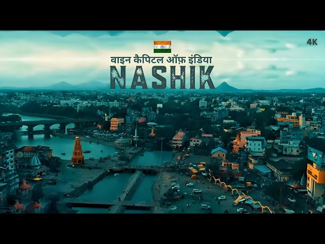

Ajanta And Ellora Caves
The Ajanta and Ellora Caves are 30 rock-cut Buddhist cave monuments dating from the second century BCE to about 480 CE in the Aurangabad district of Maharashtra state in India.Ajanta Caves are a UNESCO World Heritage Site.Universally regarded as masterpieces of Buddhist religious art, the caves include paintings and rock-cut sculptures described as among the finest surviving examples of ancient Indian art, particularly expressive paintings that present emotions through gesture, pose and form.
click here

Nashik
Nashik is an ancient holy city in Maharashtra, a state in western India. It’s known for its links to the “Ramayana” epic poem. On the Godavari River is Panchavati, a temple complex. Nearby, Lord Rama was thought to have bathed at Ram Kund water tank, today attended by Hindu devotees. Shri Kalaram Sansthan Mandir is an ancient shrine to Rama, while Rama and Sita are said to have worshipped at Sita Gufaa caves.
click here

Shirdi
Shirdi is a town in the state of Maharashtra, in western India. It's known as the former home of revered spiritual leader Sai Baba, and as a major pilgrimage site. Devotees gather daily at the Sai Baba Temple complex to honor his legacy. Here, the Samadhi Mandir shrine has an ornate marble statue of Sai Baba, alongside his tomb. Close by are Dwarkamai, a mosque where Sai Baba once lived, and tree-lined Lendi Garden
click here

Mumbai
Mumbai (formerly called Bombay) is a densely populated city on India’s west coast. A financial center, it's India's largest city. On the Mumbai Harbour waterfront stands the iconic Gateway of India stone arch, built by the British Raj in 1924. Offshore, nearby Elephanta Island holds ancient cave temples dedicated to the Hindu god Shiva. The city's also famous as the heart of the Bollywood film industry.
click here

Lonovala
Lonavala is a hill station surrounded by green valleys in western India near Mumbai. The Karla Caves and the Bhaja Caves are ancient Buddhist shrines carved out of the rock. They feature massive pillars and intricate relief sculptures. South of the Bhaja Caves sits the imposing Lohagad Fort, with its 4 gates. West of here is Bhushi Dam, where water overflows onto a set of steps during rainy season.
click here